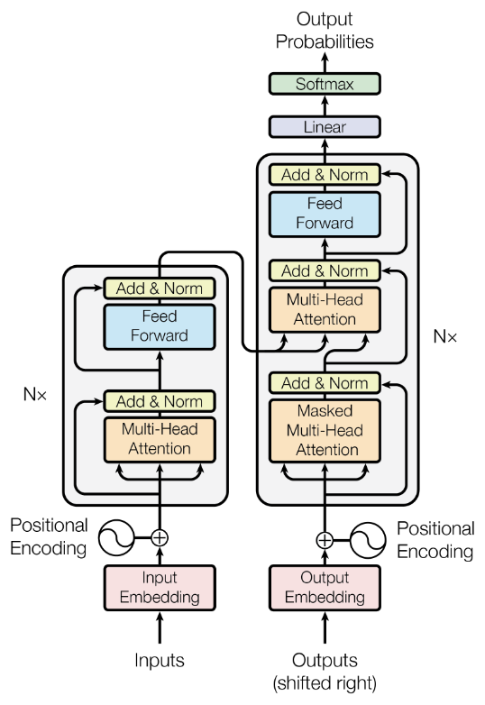

기본 구조: 신경망
AI의 뼈대는 신경망입니다. 이름은 뇌에서 따왔지만, 실제로는 숫자를 곱하고 더하는 연산이 층층이 쌓인 함수입니다.
입력이 들어오면 층을 하나씩 지나며 계산되고, 마지막 층에서 결과가 나옵니다. 모델이 “안다”고 말하는 모든 것은 결국 연결마다 붙은 숫자, 즉 가중치에 담겨 있습니다.
▶ 용어 카드 오른쪽의 작은 그림은 마우스를 올리거나 누르면 움직입니다. 한 번 더 누르면 멈춥니다.
- 신경망Neural Network
- 뇌의 뉴런 연결에서 착안한 수학적 모델입니다. 실제로는 숫자를 곱하고 더하는 연산이 층층이 쌓인 함수입니다.
- 뉴런 / 노드Neuron, Node
- 입력값들을 받아 가중합을 계산하고 결과를 다음 층으로 넘기는 가장 작은 계산 단위입니다.
- 층Layer
- 입력층, 은닉층, 출력층으로 나뉩니다. 은닉층이 많이 쌓인 신경망을 쓰는 방식을 딥러닝이라고 부릅니다.
- 가중치Weight
- 뉴런 사이 연결의 강도를 나타내는 숫자입니다. 어떤 입력을 얼마나 중요하게 볼지 정하며, 모델이 배운 “지식”은 결국 이 숫자들에 저장됩니다.
- 편향Bias
- 가중합에 더하는 보정값입니다. 입력이 0이어도 출력이 나올 수 있도록 기준점을 옮겨 줍니다.
- 파라미터Parameter
- 가중치와 편향을 합쳐 부르는 말입니다. “700억 파라미터 모델”이라고 하면 학습으로 조정되는 숫자가 700억 개라는 뜻입니다.
- 활성화 함수Activation Function
- ReLU, GELU 같은 비선형 함수입니다. 이것이 없으면 층을 아무리 쌓아도 단순한 직선 계산에 머물러 복잡한 패턴을 표현할 수 없습니다.
1.1뉴런 하나를 직접 계산해 보기
뉴런 하나가 하는 일은 단순합니다. 입력마다 가중치를 곱해 더하고(가중합), 편향을 더한 뒤, 활성화 함수에 통과시킵니다. 아래 슬라이더로 가중치와 편향을 바꿔 보세요. ReLU는 음수를 0으로 잘라 내는 가장 흔한 활성화 함수입니다.
“700억 파라미터”는 위 계산기의 w와 b 같은 숫자가 700억 개 있다는 뜻입니다. 학습은 이 숫자 전부를 조금씩 맞춰 가는 과정이고, 다음 장에서 그 방법을 봅니다.
학습: 가중치를 맞추는 과정
처음 만들어진 신경망의 가중치는 무작위 숫자라서 엉뚱한 답을 냅니다. 학습은 예시 데이터를 보여 주고, 틀린 만큼 가중치를 고치는 일을 수없이 반복하는 과정입니다.
순전파
입력을 넣어 예측값을 계산
손실 계산
예측과 정답의 차이를 숫자 하나로
역전파
각 가중치의 책임(기울기)을 거꾸로 계산
가중치 업데이트
기울기 반대 방향으로 조금 이동
- 학습 데이터Training Data
- 모델이 보고 배우는 예시들입니다. 언어 모델의 경우 방대한 텍스트가 여기에 해당합니다.
- 순전파Forward Pass
- 입력을 넣어 층을 차례로 통과시키며 예측값을 계산하는 단계입니다.
- 손실 함수Loss Function
- 예측이 정답과 얼마나 다른지를 숫자 하나로 나타냅니다. 학습의 목표는 이 값을 줄이는 것입니다.
- 역전파Backpropagation
- 손실을 출력층에서 입력층 방향으로 거꾸로 전달하면서, 각 가중치가 오차에 얼마나 책임이 있는지(기울기)를 계산합니다.
- 경사하강법Gradient Descent
- 계산된 기울기의 반대 방향으로 가중치를 조금씩 움직여 손실을 줄이는 방법입니다. Adam 같은 옵티마이저가 이 방법을 개선한 것입니다.
- 학습률Learning Rate
- 가중치를 한 번에 얼마나 크게 바꿀지 정하는 값입니다. 너무 크면 학습이 불안정해지고, 너무 작으면 느려집니다.
- 배치 / 에폭Batch / Epoch
- 배치는 한 번에 처리하는 데이터 묶음이고, 에폭은 전체 데이터를 한 바퀴 다 학습한 횟수입니다.
- 과적합Overfitting
- 학습 데이터를 외워 버려서 새로운 데이터에서는 성능이 떨어지는 현상입니다. 반대로 처음 보는 데이터에도 잘 작동하는 능력을 일반화라고 합니다.
- 하이퍼파라미터Hyperparameter
- 학습률이나 층의 수처럼, 학습으로 정해지지 않고 사람이 미리 정하는 설정값입니다. 파라미터는 모델이 배우고, 하이퍼파라미터는 사람이 정합니다.
2.1학습률을 바꿔 언덕을 내려가 보기
경사하강법은 안개 낀 언덕에서 발밑의 기울기만 보고 가장 낮은 곳을 찾아 내려가는 것과 같습니다. 한 걸음의 크기가 학습률입니다. 걸음이 너무 작으면 한참 걸리고, 너무 크면 골짜기를 지나쳐 반대편으로 튀어 오릅니다.
학습 데이터에서 손실을 0에 가깝게 줄이는 것이 끝이 아닙니다. 시험 범위 문제집만 통째로 외운 학생이 새 문제를 못 푸는 것처럼, 모델도 학습 데이터만 외우면 처음 보는 입력에서 무너집니다. 그래서 학습에 쓰지 않은 데이터로 따로 성능을 확인합니다.
대규모 언어 모델(LLM) 관련 용어
ChatGPT나 Claude 같은 대규모 언어 모델(LLM)도 앞의 신경망과 학습 원리 위에 있습니다. 다만 글을 다루기 위한 장치가 몇 가지 더 붙습니다.
글자는 그대로 계산할 수 없으니 먼저 토큰으로 쪼개고, 각 토큰을 숫자 벡터(임베딩)로 바꿉니다. 그다음 트랜스포머가 어텐션으로 토큰 사이의 관계를 계산합니다.
- 토큰 / 토크나이저Token / Tokenizer
- 텍스트를 모델이 처리하는 단위로 쪼갠 조각이 토큰이고, 쪼개는 도구가 토크나이저입니다. 한국어는 보통 한 단어가 여러 토큰으로 나뉩니다.
- 임베딩Embedding
- 토큰을 수백에서 수천 차원의 숫자 벡터로 바꾼 것입니다. 의미가 비슷한 단어는 벡터 공간에서 가까운 위치에 놓입니다.
- 트랜스포머Transformer
- 2017년 논문 “Attention Is All You Need”에서 제안된 구조로, 현재 대부분의 LLM이 이 구조를 기반으로 합니다.
- 어텐션 / 셀프 어텐션Attention / Self-Attention
- 문장 안의 각 토큰이 다른 토큰들 중 어디를 얼마나 참고할지 계산하는 메커니즘입니다. 예를 들어 “그것”이 앞의 어떤 명사를 가리키는지 파악하는 데 쓰입니다.
- 위치 인코딩Positional Encoding
- 어텐션은 토큰의 순서를 스스로 알지 못합니다. 그래서 각 토큰이 몇 번째 자리인지 나타내는 값을 임베딩에 더해 주는 장치입니다.
- 멀티헤드 어텐션Multi-Head Attention
- 어텐션을 여러 개(헤드) 나란히 돌려, 문법 관계·지시 대상·주제처럼 서로 다른 관계를 동시에 보게 하는 구조입니다. 원 논문은 헤드 8개를 썼습니다.
- 피드포워드 신경망Feed-Forward Network
- 트랜스포머 블록 안에서 토큰 벡터 하나하나를 따로 가공하는 2층 신경망입니다. 모델 파라미터의 큰 몫을 차지합니다.
- 잔차 연결 / 층 정규화Residual Connection / Layer Norm
- 각 단계의 입력을 출력에 그대로 더하고(잔차 연결), 값의 범위를 고르게 맞추는(층 정규화) 장치입니다. 층을 깊게 쌓아도 학습이 안정되게 해 줍니다.
- 컨텍스트 윈도우Context Window
- 모델이 한 번에 읽고 고려할 수 있는 최대 토큰 수입니다.
- 사전학습Pre-training
- 방대한 텍스트로 “다음 토큰 맞히기”를 반복하며 언어와 세상에 대한 일반 지식을 익히는 단계입니다. 비용이 가장 많이 드는 단계이기도 합니다.
- 파인튜닝Fine-tuning
- 사전학습된 모델을 특정 목적에 맞는 데이터로 추가 학습시키는 것입니다.
- RLHF인간 피드백 기반 강화학습
- 사람이 여러 답변을 비교 평가한 결과로 보상 모델을 만들고, 그 보상을 기준으로 모델을 조정하는 기법입니다. 모델을 더 유용하고 안전하게 다듬는 데 쓰입니다.
- 지식 컷오프Knowledge Cutoff
- 학습 데이터가 끝나는 시점입니다. 그 이후의 정보는 모델이 알지 못합니다. 최신 정보가 필요하면 검색 같은 외부 도구를 함께 써야 합니다.
3.1Attention Is All You Need: 트랜스포머를 낳은 논문
2017년 구글 연구진 8명이 발표한 논문입니다. 제목 그대로 “어텐션만 있으면 된다”는 주장을 담았고, 이 논문이 제안한 트랜스포머 구조가 지금의 LLM 거의 모두의 뼈대가 되었습니다.
- 문제
- 당시 번역 모델의 주류였던 RNN(순환 신경망)은 단어를 앞에서부터 하나씩 차례로 처리했습니다. 앞 단어 계산이 끝나야 다음 단어로 넘어갈 수 있어 GPU로 한꺼번에 계산하기 어렵고, 문장이 길면 앞부분 정보가 흐려졌습니다.
- 제안
- 순환 구조를 아예 버리고 어텐션만으로 모델을 만들었습니다. 모든 토큰이 다른 모든 토큰을 한 번에 참고하므로, 문장 전체를 병렬로 계산할 수 있습니다.
- 핵심 장치
- 셀프 어텐션(토큰끼리 서로 참고), 멀티헤드 어텐션(여러 관점의 어텐션을 동시에), 위치 인코딩(순서 정보를 숫자로 더해 줌), 그리고 입력을 읽는 인코더와 출력을 만드는 디코더.
- 결과
- 영어→독일어 번역(WMT 2014)에서 BLEU 28.4로 당시 최고 기록을 냈고, 큰 모델도 GPU 8장으로 3.5일 만에 학습했습니다. 기존 모델보다 학습 비용이 훨씬 적었습니다.
- 영향
- 인코더 쪽을 쓴 BERT, 디코더 쪽을 쓴 GPT 계열을 거쳐 오늘날 대부분의 LLM이 이 구조를 기반으로 합니다.
3.2트랜스포머 아키텍처: 같은 블록을 층층이 쌓은 구조
트랜스포머는 임베딩 → 같은 구조의 블록 여러 층 → 출력층으로 이루어집니다. 블록 하나는 토큰끼리 정보를 주고받는 어텐션과 토큰 하나하나를 따로 가공하는 피드포워드 신경망, 두 부분으로 되어 있고, 각 부분 뒤에는 더하기 & 정규화가 붙습니다.
원 논문은 번역을 위해 원문을 읽는 인코더와 번역문을 쓰는 디코더를 짝지었습니다. GPT 계열을 비롯한 오늘날 대부분의 LLM은 이 중 디코더만 여러 층 쌓은 구조를 씁니다. 아래 그림에서 블록을 눌러 각 부분이 하는 일을 확인해 보세요.
원 논문 그림과 나란히 보기
아래는 원 논문의 Figure 1입니다. 위 구조도의 “인코더-디코더” 모드와 같은 내용을 논문은 이렇게 그렸습니다. 그림의 각 부분을 누르면 이 페이지에서 무엇이라 부르는지와 하는 일이 나오고, “구조도에서 보기”로 위 구조도의 같은 블록으로 이동합니다. 반대로 위 구조도의 블록을 누르면 이 그림에서 같은 부분이 빛납니다.

두 그림을 비교할 때 알아 두면 좋은 표기 차이입니다.
- 방향: 논문 그림은 아래(입력)에서 위(출력)로, 이 페이지 구조도는 위에서 아래로 흐릅니다.
- ⊕와 물결 기호: 임베딩에 위치 인코딩(사인·코사인 함수)을 더한다는 뜻입니다.
- 블록을 돌아 Add & Norm으로 들어가는 화살표: 잔차 연결입니다. 구조도에서는 초록 선으로 그렸습니다.
- 어텐션 아래에서 세 갈래로 갈라지는 화살표: 어텐션에 들어가는 쿼리(Q)·키(K)·값(V)입니다. “무엇을 찾는지(Q)”를 “각 토큰의 꼬리표(K)”와 맞춰 보고, 잘 맞는 토큰의 “내용(V)”을 많이 가져옵니다. 디코더 가운데 어텐션은 K·V를 인코더에서, Q를 디코더에서 받습니다.
- N×: 같은 블록을 N번 쌓는다는 뜻입니다. 원 논문은 N=6입니다.
- 오늘날 디코더 전용 LLM: 오른쪽 열에서 가운데 Multi-Head Attention과 그 Add & Norm을 뺀 구조를 수십 층 쌓은 것입니다. 위의 “오늘날 LLM이 쓰는 부분” 버튼으로 확인해 보세요.
디코더의 어텐션에는 마스크가 붙습니다. 다음 토큰을 맞히도록 학습하는데, 각 위치가 자기보다 뒤에 있는 토큰(곧 정답)을 미리 보면 시험지를 보고 답을 쓰는 셈이 되기 때문입니다. 그래서 어텐션 점수표의 오른쪽 위 절반을 가립니다.
3.3어텐션: 각 토큰이 어디를 보는가
“그것은”이라는 토큰만 봐서는 무엇을 가리키는지 알 수 없습니다. 셀프 어텐션은 문장 안의 다른 토큰들에 점수를 매겨, 이 토큰을 이해할 때 어디를 얼마나 참고할지 정합니다. 토큰을 눌러 보세요.
3.4컨텍스트 윈도우: 한 번에 볼 수 있는 범위
대화가 길어지면 앞부분부터 창 밖으로 밀려납니다. 창 밖으로 나간 내용은 모델에게 더 이상 보이지 않습니다.
추론: 학습된 모델을 쓰는 과정
학습이 끝나면 가중치는 고정됩니다. 사용자가 AI와 대화하는 순간은 모두 추론이고, 이때 모델은 아무것도 새로 배우지 않습니다.
LLM은 답을 한 번에 만들지 않습니다. 다음 토큰 하나를 예측하고, 그 토큰을 입력 끝에 붙여 다시 다음 토큰을 예측하는 일을 반복합니다.
- 추론Inference
- 학습이 끝나 고정된 가중치로 새 입력에 대한 출력을 계산하는 것입니다. 이때 가중치는 바뀌지 않습니다. 사용자가 AI와 대화하는 순간이 바로 추론입니다.
- 자기회귀 생성Autoregressive Generation
- LLM은 토큰을 하나씩 예측하고, 방금 예측한 토큰을 다시 입력에 붙여 다음 토큰을 예측하는 과정을 반복하며 문장을 만듭니다.
- 로짓 / 소프트맥스Logits / Softmax
- 모델은 모든 후보 토큰에 점수(로짓)를 매기고, 소프트맥스 함수로 이 점수를 확률로 바꿉니다.
- 샘플링 / 온도Sampling / Temperature
- 확률에 따라 다음 토큰을 고르는 방식입니다. 온도가 낮으면 무난하고 일관된 답이, 높으면 다양하고 창의적인 답이 나옵니다. Top-p와 Top-k는 후보 범위를 제한하는 방법입니다.
- Top-k 샘플링Top-k Sampling
- 확률이 높은 순서로 k개의 후보만 남기고 나머지는 버린 뒤, 남은 후보 안에서 뽑습니다. k=1이면 늘 가장 확률 높은 토큰만 고르게 됩니다(그리디 디코딩).
- Top-p 샘플링Top-p (Nucleus) Sampling
- 확률이 높은 순서로 더해 가다가 누적 확률이 p에 닿을 때까지의 후보만 남깁니다. 모델이 확신할 때는 후보가 적게, 애매할 때는 많이 남아 후보 수가 상황에 맞게 달라집니다.
- 환각Hallucination
- 모델이 그럴듯하지만 사실이 아닌 내용을 생성하는 현상입니다. 모델이 사실을 검색하는 것이 아니라 확률적으로 그럴듯한 다음 토큰을 만들어 내기 때문에 생깁니다.
- KV 캐시KV Cache
- 앞에서 계산한 어텐션 값을 저장해 두고 재사용하여 생성 속도를 높이는 기법입니다.
4.1온도를 바꿔 다음 토큰을 뽑아 보기
모델은 후보마다 점수(로짓)를 매기고, 소프트맥스로 확률을 만든 뒤 그 확률대로 하나를 뽑습니다. 온도는 이 확률 분포를 뾰족하게 또는 평평하게 만드는 손잡이입니다. 온도를 바꾸고 20번 뽑아 보세요.
4.2Top-k와 Top-p: 뽑을 후보를 미리 잘라 내기
온도를 높이면 다양한 답이 나오지만, 확률이 아주 낮은 엉뚱한 토큰(“바나나”)까지 뽑힐 수 있습니다. 그래서 뽑기 전에 후보 범위를 잘라 냅니다.
- Top-k: 확률 순으로 상위 k개만 남깁니다. 상황과 상관없이 후보 수가 고정됩니다.
- Top-p(뉴클리어스 샘플링): 확률을 높은 순으로 더해 누적 p에 닿을 때까지만 남깁니다. 모델이 확신하면 후보가 1~2개로 줄고, 애매하면 여러 개가 남습니다.
아래에서 두 상황을 오가며 같은 설정을 적용해 보세요. Top-p는 상황에 따라 후보 수가 바뀌지만 Top-k는 그대로입니다.
위 그림에서 모델은 “사실인지”를 따지지 않고 “다음에 오기 그럴듯한지”로만 토큰을 고릅니다. 그럴듯하지만 틀린 내용이 자연스럽게 이어질 수 있는 이유입니다. 중요한 사실은 출처로 확인하는 습관이 필요합니다.
규모와 효율 관련 용어
모델은 키울수록 똑똑해지는 경향이 있지만, 그만큼 비싸고 무거워집니다. 그래서 키우는 기술과 가볍게 만드는 기술이 함께 발전해 왔습니다.
- 스케일링 법칙Scaling Laws
- 파라미터 수, 데이터 양, 연산량을 늘리면 성능이 예측 가능한 패턴으로 향상된다는 경험적 법칙입니다.
- GPU / TPUGraphics / Tensor Processing Unit
- 행렬 곱셈을 대량으로 병렬 처리하는 칩입니다. 학습과 추론 모두의 핵심 하드웨어입니다.
- 양자화Quantization
- 가중치를 더 적은 비트로 표현해 모델을 가볍고 빠르게 만드는 기법입니다. 정확도는 약간 손해를 볼 수 있습니다.
- 지식 증류Distillation
- 큰 모델(교사)의 출력을 작은 모델(학생)이 따라 배우게 해서 작지만 성능 좋은 모델을 만드는 방법입니다.
- MoEMixture of Experts
- 여러 “전문가” 하위 네트워크 중 입력마다 일부만 활성화해서, 전체 규모는 크지만 계산은 효율적으로 하는 구조입니다.
5.1양자화: 같은 모델을 더 적은 비트로
700억(70B) 파라미터 모델의 가중치를 숫자 하나당 몇 비트로 저장하느냐에 따라 필요한 메모리가 크게 달라집니다. 비트를 절반으로 줄이면 메모리도 절반이 됩니다.
5.2MoE: 전문가 중 일부만 깨우기
MoE 모델은 토큰마다 라우터가 어떤 전문가에게 맡길지 고릅니다. 전체 파라미터는 크지만, 토큰 하나를 처리할 때는 고른 전문가만 계산합니다.
한눈에 보는 흐름
학습은 시험 공부, 추론은 시험 치르기에 비유할 수 있습니다.
학습 = 시험 공부
- 1문제를 푼다순전파
- 2채점한다손실 함수
- 3틀린 원인을 거슬러 찾는다역전파
- 4이해를 고친다경사하강법으로 가중치 업데이트
추론 = 시험 치르기
- 1새 문제를 받는다사용자 입력
- 2저장된 가중치만으로 답을 계산한다순전파 + 자기회귀 생성
용어 색인
42개 용어를 장별로 모았습니다. 누르면 해당 설명으로 이동합니다.
이 페이지는 2026년 6월까지 알려진 일반적인 지식을 바탕으로 정리했습니다. 도해와 데모는 이해를 돕기 위해 새로 만든 것이며, “예시”라고 적힌 수치는 실제 모델의 값이 아닙니다.